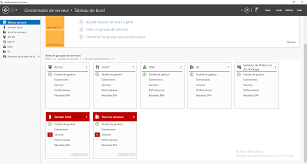
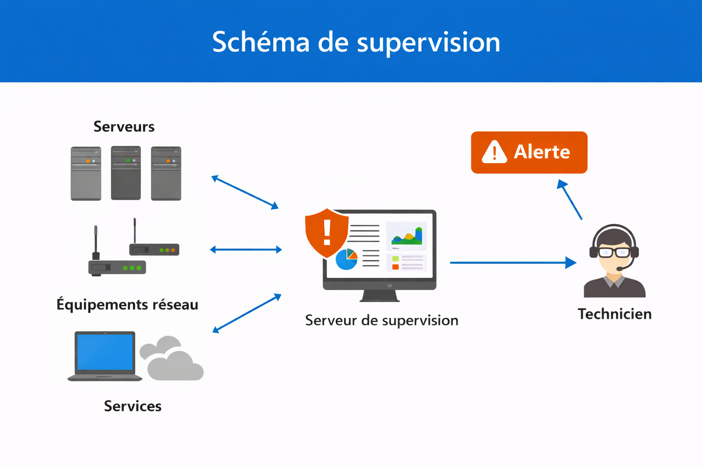

Veille Informatique L’importance de la supervision informatique
Objectif
Dans le cadre du Bloc 1 – Support et mise à disposition de services informatiques, j’ai réalisé une veille informationnelle sur la supervision informatique. L’objectif était de comprendre son rôle dans la prévention des incidents et l’amélioration de la continuité de service au sein d’une organisation.
Qu’est-ce que la supervision informatique ?
La supervision informatique consiste à surveiller en temps réel les serveurs, les équipements réseau et les services d’une infrastructure. Elle permet de détecter rapidement les anomalies, comme une surcharge CPU, un espace disque insuffisant ou un service arrêté.
Des outils spécialisés permettent de centraliser ces informations et d’envoyer des alertes en cas de problème afin d’intervenir avant qu’une panne majeure ne survienne.
Image : Tableau de bord de supervision
Figure 1 – Exemple d’interface de monitoring affichant l’état des serveurs.
Les avantages pour les entreprises
La supervision permet de réduire les interruptions de service et d’anticiper les incidents. Grâce aux alertes automatiques, les techniciens peuvent intervenir rapidement et limiter l’impact sur les utilisateurs.
Elle contribue également à améliorer la performance du système d’information en identifiant les points faibles ou les ressources sous-dimensionnées.
Supervision et missions du Bloc 1
La supervision est directement liée aux missions du Bloc 1, notamment la maintenance préventive et la garantie de continuité de service. Elle permet d’assurer la disponibilité des ressources informatiques mises à disposition des utilisateurs.
Elle s’inscrit également dans une démarche d’amélioration continue du service informatique, en analysant les incidents pour éviter leur réapparition.
Image : Schéma de supervision d’un réseau
Figure 3 – Surveillance centralisée des équipements et services.
Bilan
Cette veille informatique m’a permis de comprendre que la supervision est un élément essentiel pour maintenir la stabilité d’un système d’information. Elle joue un rôle préventif et améliore la réactivité du service informatique.
Conclusion
La supervision informatique est aujourd’hui indispensable dans les entreprises. Elle permet d’anticiper les pannes, de sécuriser les services et d’améliorer la qualité de service offerte aux utilisateurs. Cette veille renforce ma compréhension des outils et des méthodes nécessaires pour garantir la disponibilité d’un système d’information.